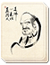

Requires
- Arts: 
Enables
Effects
- -15% cost for monk actions
- -25% cost for missionary actions
- -10% cost for Ikko monk actions
Description
As foreigners in Japan, missionaries were treated with a degree of suspicion, and expected to shift for themselves. They might be guests, in the broadest sense of the term, but that did not mean they could expect subsidies and monetary support from a daimyo. The Christians had to pay their own way through their own efforts. Rather than rely on goods from home, half the world away, traders found opportunities closer to Japan, and traded in Chinese silks and other goods. These had always been welcome in Japan, and the money gave the Portuguese the wherewithal to finance their missionary activities. Building churches, spreading the word of God and demonstrating the virtue of Christian charity were not cheap activities; collection plates would remain very empty until there were some converts.